17. 三层架构中的 MVC Web 应用程序 – 示例 3 – Firebird 数据库管理系统
17.1. Firebird 数据库
在此新版本中，我们将把人员列表存储在 Firebird 数据库表中。有关安装和管理此 DBMS 的信息，请参阅文档 [http://tahe.developpez.com/divers/sql-firebird/]。下方的屏幕截图来自 IBExpert，这是一个用于管理 Interbase 和 Firebird DBMS 的管理客户端。
该数据库名为 [dbpersonnes.gdb]。其中包含一个名为 [PERSONNES] 的表：

[PERSONNES] 表将存储由 Web 应用程序管理的人员列表。该表是通过以下 SQL 语句创建的：
- 第 2–10 行：[PERSONNES] 表的结构旨在存储 [Person] 类型的对象，其结构反映了该对象的结构。 由于 Firebird 中不存在布尔类型，因此 [MARRIED] 字段（第 8 行）被声明为 [SMALLINT] 类型，即整数。其值将为 0（未婚）或 1（已婚）。
- 第 13–16 行：这些完整性约束与 [ValidatePerson] 数据验证器的约束一致。
- 第 19 行：ID 字段是 [PERSONNES] 表的主键
[PERSONNES] 表可能包含以下内容：

数据库 [dbpersonnes.gdb] 除了包含 [PERSONNES] 表外，还包含一个名为 [GEN_PERSONNES_ID] 的生成器对象。该生成器会生成连续的整数，我们将使用这些整数为 [PERSONNES] 表的主键 [ID] 字段赋值。下面通过一个示例来说明其工作原理：
 |
 |
我们可以看到生成器 [GEN_PERSONNES_ID] 的值发生了变化（双击它并按 F5 刷新）：
因此，对于 [GEN_PERSONNES_ID] 生成器，该语句返回以下值。GEN_ID 是 Firebird 的内部函数，而 [RDB$DATABASE] 是该数据库管理系统中的系统表。
17.2. 用于 [dao] 和 [service] 层的 Eclipse 项目
为了开发数据库应用程序的 [dao] 和 [service] 层，我们将使用以下 Eclipse 项目 [mvc-personnes-03]：

该项目是一个简单的 Java 项目，而非 Tomcat Web 项目。请注意，应用程序的第 2 版将沿用第 1 版的 [web] 层。因此，该层无需重新编写。
[src] 文件夹
该文件夹包含 [dao] 和 [service] 层的源代码：

其中包含多个包：
- [istia.st.mvc.personnes.dao]：包含 [dao] 层
- [istia.st.mvc.personnes.entites]：包含 [Person] 类
- [istia.st.mvc.people.service]：包含 [service] 类
- [istia.st.mvc.personnes.tests]：包含针对 [dao] 和 [service] 层的 JUnit 测试
以及必须位于应用程序 ClassPath 中的配置文件。
[database] 文件夹
该文件夹包含用于用户的 Firebird 数据库：

- [dbpersonnes.gdb] 是数据库文件。
- [dbpersonnes.sql] 是用于生成该数据库的 SQL 脚本：
文件夹 [lib]
此文件夹包含应用程序所需的文件：
 |
请注意，这里包含用于 Firebird 数据库管理系统（DBMS）的 JDBC 驱动程序 [firebirdsql-full.jar]，以及若干 [spring-*.jar] 文件。我们本可以使用发行版 [dist] 文件夹中的单个 [spring.jar] 文件，该文件包含 Spring 的所有类。 我们也可以仅使用项目所需的归档文件。这就是我们在此采取的做法，依据是 Eclipse 报告的缺失类错误以及部分 Spring 归档文件的名称。来自 [lib] 文件夹的所有这些归档文件均已添加到项目的类路径中。
[dist] 文件夹
该文件夹将包含应用程序类编译生成的归档文件：
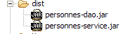
- [personnes-dao.jar]：[dao] 层的归档文件
- [personnes-service.jar]：[service] 层的归档文件
17.3. [dao] 层
17.3.1. [dao] 层的组件
[dao] 层由以下类和接口组成：

- [IDao] 是 [dao] 层提供的接口
- [DaoImplCommon] 是该接口的一个实现，其中人员组存储在数据库表中。[DaoImplCommon] 整合了与数据库管理系统无关的功能。
- [DaoImplFirebird] 是从 [DaoImplCommon] 派生出的类，专门用于管理 Firebird 数据库。
- [DaoException] 是 [dao] 层抛出的未处理异常的类型。该类源自第 1 版。
[IDao] 接口如下：
- 该接口与上一版本一样，包含四个方法。
实现该接口的 [DaoImplCommon] 类如下所示：
- 第 8–9 行：[DaoImpl] 类实现了 [IDao] 接口，因此也实现了 [getAll]、[getOne]、[saveOne] 和 [deleteOne] 这四个方法。
- 第 27–37 行：[saveOne] 方法根据需要添加还是修改人员，分别调用两个内部方法 [insertPerson] 和 [updatePerson]。
- 第 50 行：私有方法 [check] 与上一版本相同。此处不再赘述。
- 第 8 行：为了实现 [IDao] 接口，[DaoImpl] 类继承了 Spring 类 [SqlMapClientDaoSupport]。
17.3.2. 数据访问层 [iBATIS]
Spring类 [SqlMapClientDaoSupport] 使用了第三方框架 [Ibatis SqlMap]，该框架可通过以下网址获取：[http://ibatis.apache.org/]：

[iBATIS] 是一个 Apache 项目，旨在简化基于数据库的 [DAO] 层的构建。使用 [iBATIS] 时，数据访问层的架构如下：
 |
[iBATIS] 位于应用程序的 [DAO] 层与数据库的 JDBC 驱动程序之间。除了 [iBATIS] 之外，还有其他替代方案，例如 [Hibernate]：

 |
使用 [iBATIS] 框架需要两个压缩包 [ibatis-common, ibatis-sqlmap]，这两个压缩包均已放置在项目的 [lib] 文件夹中：
 |
[SqlMapClientDaoSupport] 类封装了使用 [iBATIS] 框架的通用部分，即在使用 [iBATIS] 工具的所有 [DAO] 层中都会出现的代码段。 要编写代码的非通用部分——即我们正在编写的 [DAO] 层特有的代码——只需继承 [SqlMapClientDaoSupport] 类即可。这就是我们在此处要做的事情。
[SqlMapClientDaoSupport] 类的定义如下：

在这个类的诸多方法中，其中一个方法允许我们配置用于操作数据库的 [iBATIS] 客户端：

[SqlMapClient sqlMapClient] 对象是用于访问数据库的 [iBATIS] 对象。它本身实现了我们架构中的 [iBATIS] 层：
 |
使用该对象的一般操作流程如下：
- 从连接池中请求连接
- 打开事务
- 执行存储在配置文件中的一系列 SQL 语句
- 关闭事务
- 将连接归还给连接池
如果我们的 [DaoImplCommon] 实现直接与 [iBATIS] 配合使用，就必须反复执行这一系列操作。只有操作 3 是 [dao] 层特有的；其余操作都是通用的。 Spring 类 [SqlMapClientDaoSupport] 将自行处理操作 1、2、4 和 5，并将操作 3 委托给其派生类，在本例中即 [DaoImplCommon] 类。
为了正常工作，[SqlMapClientDaoSupport]类需要一个指向iBATIS对象[SqlMapClient sqlMapClient]的引用，该对象将负责与数据库的通信。该对象要正常工作需要两项内容：
- 一个已连接至数据库的 [DataSource] 对象，用于从中请求连接
- 一个（或多个）配置文件，其中包含待执行的 SQL 语句。实际上，这些语句并不在 Java 代码中。它们通过配置文件中的代码标识，而 [SqlMapClient sqlMapClient] 对象使用该代码来执行特定的 SQL 语句。
反映上述架构的 [dao] 层的初步配置如下：
<!-- the [dao] layer access classes -->
<bean id="dao" class="istia.st.mvc.personnes.dao.DaoImplCommon">
<property name="sqlMapClient">
<ref local="sqlMapClient"/>
</property>
</bean>
在此，[DaoImplCommon] 类（第 2 行）的 [sqlMapClient] 属性（第 3 行）被初始化。该属性由 [DaoImpl] 类的 [setSqlMapClient] 方法进行初始化。该类本身并不包含此方法，而是其父类 [SqlMapClientDaoSupport] 提供了该方法。 因此，实际上在此处被初始化的正是该类。
现在，在第 4 行，我们引用了一个名为“sqlMapClient”的对象，而该对象尚未被创建。如前所述，该对象的类型为 [SqlMapClient]，属于 [iBATIS] 类型：

[SqlMapClient] 是一个接口。Spring 提供了 [SqlMapClientFactoryBean] 类来获取一个实现该接口的对象：
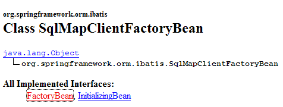
请注意，我们试图实例化一个实现 [SqlMapClient] 接口的对象。但 [SqlMapClientFactoryBean] 类似乎并非如此。该类实现了 [FactoryBean] 接口（见上文），并具有以下 [getObject()] 方法：
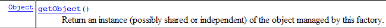
当 Spring 被请求提供一个实现 [FactoryBean] 接口的对象实例时，它会：
- 创建该类的实例 [I]——在此情况下，它会创建一个类型为 [SqlMapClientFactoryBean] 的实例。
- 将 [I].getObject() 方法的结果返回给调用方法——[SqlMapClientFactoryBean].getObject() 方法将返回一个实现 [SqlMapClient] 接口的对象。
为了返回一个实现 [SqlMapClient] 接口的对象，[SqlMapClientFactoryBean] 类需要该对象所需的两项信息：
- 一个已连接至数据库的 [DataSource] 对象，该对象将用于请求连接
- 一个（或多个）存储待执行 SQL 语句的配置文件
[SqlMapClientFactoryBean] 类提供了设置方法来初始化这两个属性：
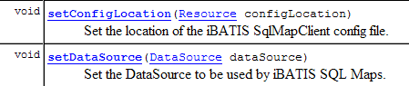
我们正在取得进展……我们的配置文件逐渐成形，最终如下所示：
<!-- SqlMapCllient -->
<bean id="sqlMapClient"
class="org.springframework.orm.ibatis.SqlMapClientFactoryBean">
<property name="dataSource">
<ref local="dataSource"/>
</property>
<property name="configLocation">
<value>classpath:sql-map-config-firebird.xml</value>
</property>
</bean>
<!-- the [dao] layer access classes -->
<bean id="dao" class="istia.st.mvc.personnes.dao.DaoImplCommon">
<property name="sqlMapClient">
<ref local="sqlMapClient"/>
</property>
</bean>
- 第 2-3 行："sqlMapClient" Bean 的类型为 [SqlMapClientFactoryBean]。根据前文所述，我们知道当向 Spring 请求该 Bean 的实例时，会获得一个实现 iBATIS [SqlMapClient] 接口的对象。因此，第 14 行获取的正是该对象。
- 第 7-9 行：我们指定 iBATIS [SqlMapClient] 对象所需的配置文件名为 "sql-map-config-firebird.xml"，且该文件必须位于应用程序的 ClassPath 中。此处使用了 [SqlMapClientFactoryBean].setConfigLocation 方法。
- 第 4–6 行：我们使用 [SqlMapClientFactoryBean] 的 [setDataSource] 方法初始化其 [dataSource] 属性。
第 5 行：我们引用了一个名为“dataSource”的 Bean，该 Bean 尚未创建。如果查看 [SqlMapClientFactoryBean] 的 [setDataSource] 方法所期望的参数，我们会发现其类型为 [DataSource]：

我们再次面对一个需要寻找实现类的接口。此类的作用是高效地为应用程序提供与特定数据库的连接。数据库管理系统（DBMS）无法同时保持大量连接处于打开状态。为了减少任意时刻的打开连接数，在每次与数据库交互时，我们必须：
- 建立连接
- 启动事务
- 执行 SQL 语句
- 关闭事务
- 关闭连接
反复打开和关闭连接非常耗时。为了解决这两个问题——既要限制任意时刻打开的连接数量，又要减少打开和关闭连接带来的开销——实现 [DataSource] 接口的类通常会采取以下做法：
- 实例化时，它们会向目标数据库打开 N 个连接。N 通常有一个默认值，且通常可在配置文件中定义。这 N 个连接始终保持打开状态，并构成一个可供应用程序线程使用的连接池。
- 当应用程序线程请求连接时，[DataSource] 对象会为其提供启动时打开的 N 个连接中的一个（如果仍有可用连接）。当应用程序关闭连接时，该连接实际上并未被关闭，而是被放回可用连接池中。
目前有多种免费的 [DataSource] 接口实现。本文将使用 [commons DBCP] 实现，其地址为 [http://jakarta.apache.org/commons/dbcp/]：

使用 [commons DBCP] 工具需要两个压缩包 [commons-dbcp, commons-pool]，这两个文件均已放置在项目的 [lib] 文件夹中：
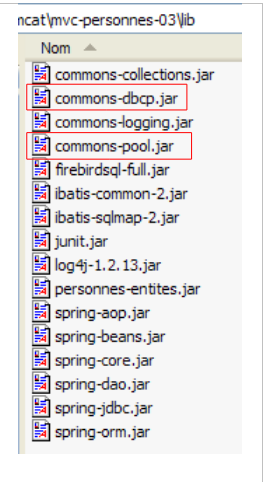 |
来自 [commons DBCP] 的 [BasicDataSource] 类提供了我们所需的 [DataSource] 实现：

该类将为我们提供一个连接池，用于访问应用程序的 Firebird 数据库 [dbpersonnes.gdb]。为此，我们必须向其提供创建连接池所需的信息：
- 要使用的 JDBC 驱动程序名称——通过 [setDriverClassName] 初始化
- 要使用的数据库 URL——通过 [setUrl] 初始化
- 连接所有者的用户名——通过 [setUsername] 初始化（注意：并非如预期所示的 setUserName）
- 其密码——通过 [setPassword] 初始化
我们的 [dao] 层的配置文件可能如下所示：
<?xml version="1.0" encoding="ISO_8859-1"?>
<!DOCTYPE beans SYSTEM "http://www.springframework.org/dtd/spring-beans.dtd">
<beans>
<!-- data source DBCP -->
<bean id="dataSource" class="org.apache.commons.dbcp.BasicDataSource"
destroy-method="close">
<property name="driverClassName">
<value>org.firebirdsql.jdbc.FBDriver</value>
</property>
<!-- warning: do not leave spaces between the two <value> tags in the url -->
<property name="url">
<value>jdbc:firebirdsql:localhost/3050:C:/data/2005-2006/eclipse/dvp-eclipse-tomcat/mvc-personnes-03/database/dbpersonnes.gdb</value>
</property>
<property name="username">
<value>sysdba</value>
</property>
<property name="password">
<value>masterkey</value>
</property>
</bean>
<!-- SqlMapCllient -->
<bean id="sqlMapClient"
class="org.springframework.orm.ibatis.SqlMapClientFactoryBean">
<property name="dataSource">
<ref local="dataSource"/>
</property>
<property name="configLocation">
<value>classpath:sql-map-config-firebird.xml</value>
</property>
</bean>
<!-- the [dao] layer access classes -->
<bean id="dao" class="istia.st.mvc.personnes.dao.DaoImplCommon">
<property name="sqlMapClient">
<ref local="sqlMapClient"/>
</property>
</bean>
</beans>
- 第 7–9 行：Firebird 数据库管理系统 (DBMS) 的 JDBC 驱动程序名称
- 第 11–13 行：Firebird 数据库 [dbpersonnes.gdb] 的 URL。请特别注意此处的书写方式。<value> 标签与 URL 之间不得有空格。
- 第 14–16 行：连接所有者——此处为 [sysdba]，即 Firebird 发行版的默认管理员
- 第 17–19 行：其密码 [masterkey]——这也是默认值
我们已取得显著进展，但仍有几个配置要点需要澄清：第 28 行引用了 [sql-map-config-firebird.xml] 文件，该文件必须配置 iBATIS [SqlMapClient]。在查看其内容之前，让我们先展示这些配置文件在 Eclipse 项目中的位置：

- [spring-config-test-dao-firebird.xml] 是我们刚刚分析过的 [dao] 层的配置文件
- [sql-map-config-firebird.xml] 由 [spring-config-test-dao-firebird.xml] 引用。我们将对其进行分析。
- [personnes-firebird.xml] 由 [sql-map-config-firebird.xml] 引用。我们将对其进行分析。
上述三个文件位于 [src] 文件夹中。在 Eclipse 中，这意味着运行时它们将位于项目的 [bin] 文件夹中（上图未显示）。该文件夹是应用程序 ClassPath 的一部分。因此，最终上述三个文件将出现在应用程序的 ClassPath 中。这是必要的。
[sql-map-config-firebird.xml] 文件内容如下：
<?xml version="1.0" encoding="UTF-8" ?>
<!DOCTYPE sqlMapConfig
PUBLIC "-//iBATIS.com//DTD SQL Map Config 2.0//EN"
"http://www.ibatis.com/dtd/sql-map-config-2.dtd">
<sqlMapConfig>
<sqlMap resource="personnes-firebird.xml"/>
</sqlMapConfig>
- 该文件必须以 <sqlMapConfig> 作为根标签（第 6 行和第 8 行）
- 第 7 行：<sqlMap> 标签用于指定包含待执行 SQL 语句的文件。 通常（尽管并非必须）每个表对应一个文件。这使得特定表的 SQL 语句可以集中到一个文件中。然而，涉及多个表的 SQL 语句很常见。在这种情况下，上述结构不再适用。关键是要记住，所有由 <sqlMap> 标签指定的文件都会被合并。这些文件会在应用程序的 ClassPath 中进行搜索。
[personnes-firebird.xml] 文件描述了将在 Firebird 数据库 [dbpersonnes.gdb] 的 [PERSONNES] 表上执行的 SQL 语句。其内容如下：
<?xml version="1.0" encoding="UTF-8" ?>
<!DOCTYPE sqlMap
PUBLIC "-//iBATIS.com//DTD SQL Map 2.0//EN"
"http://www.ibatis.com/dtd/sql-map-2.dtd">
<sqlMap>
<!-- alias class [Person] -->
<typeAlias alias="Personne.classe"
type="istia.st.mvc.personnes.entites.Personne"/>
<!-- mapping table [PERSONNES] - object [Person] -->
<resultMap id="Personne.map"
class="Personne.classe">
<result property="id" column="ID" />
<result property="version" column="VERSION" />
<result property="nom" column="NOM"/>
<result property="prenom" column="PRENOM"/>
<result property="dateNaissance" column="DATENAISSANCE"/>
<result property="marie" column="MARIE"/>
<result property="nbEnfants" column="NBENFANTS"/>
</resultMap>
<!-- list of all persons -->
<select id="Personne.getAll" resultMap="Personne.map" > select ID, VERSION, NOM,
PRENOM, DATENAISSANCE, MARIE, NBENFANTS FROM PERSONNES</select>
<!-- get a specific person -->
<select id="Personne.getOne" resultMap="Personne.map" >select ID, VERSION, NOM,
PRENOM, DATENAISSANCE, MARIE, NBENFANTS FROM PERSONNES WHERE ID=#value#</select>
<!-- add a person -->
<insert id="Personne.insertOne" parameterClass="Personne.classe">
<selectKey keyProperty="id">
SELECT GEN_ID(GEN_PERSONNES_ID,1) as "value" FROM RDB$$DATABASE
</selectKey>
insert into
PERSONNES(ID, VERSION, NOM, PRENOM, DATENAISSANCE, MARIE, NBENFANTS)
VALUES(#id#, #version#, #nom#, #prenom#, #dateNaissance#, #marie#,
#nbEnfants#) </insert>
<!-- update a person -->
<update id="Personne.updateOne" parameterClass="Personne.classe"> update
PERSONNES set VERSION=#version#+1, NOM=#nom#, PRENOM=#prenom#, DATENAISSANCE=#dateNaissance#,
MARIE=#marie#, NBENFANTS=#nbEnfants# WHERE ID=#id# and
VERSION=#version#</update>
<!-- delete a person -->
<delete id="Personne.deleteOne" parameterClass="int"> delete FROM PERSONNES WHERE
ID=#value# </delete>
</sqlMap>
- 该文件必须以 <sqlMap> 作为根标签（第 7 行和第 45 行）
- 第 9–10 行：为了便于编写文件，我们将别名 [Person.class] 赋予类 [istia.st.springmvc.personnes.entites.Person]。
- 第 12–21 行：定义了 [PERSONNES] 表中的列与 [Personne] 对象中的字段之间的映射。
- 第 23–24 行：用于从 [PERSONNES] 表中检索所有人员的 SQL [SELECT] 语句
- 第 26–27 行：用于从 [PERSONNES] 表中检索特定人员的 SQL [SELECT] 语句
- 第 29–36 行：用于将人员插入 [PERSONS] 表的 SQL [INSERT] 语句
- 第 38–41 行：用于更新 [PERSONS] 表中某人的 SQL [UPDATE] 语句
- 第 42–44 行：用于从 [PERSONS] 表中删除某人的 SQL [DELETE] 命令
我们将通过分析实现 [dao] 层的 [DaoImplCommon] 类，来解释 [people-firebird.xml] 文件内容的作用和含义。
17.3.3. [DaoImplCommon] 类
让我们重新审视一下数据访问架构：
 |
[DaoImplCommon] 类如下所示：
我们将逐一探讨这些方法。
getAll
该方法用于获取列表中的所有人员。其代码如下：
首先，让我们回顾一下，[DaoImplCommon] 类继承自 Spring 的 [SqlMapClientDaoSupport] 类。正是该类提供了上文第 3 行中使用的 [getSqlMapClientTemplate()] 方法。该方法的签名如下：

[SqlMapClientTemplate] 类型封装了来自 [iBATIS] 层的 [SqlMapClient] 对象。我们将通过它访问数据库。由于 [SqlMapClientDaoSupport] 类可以访问 [iBATIS] 的 SqlMapClient 类型，因此也可以直接使用该类型：

[iBATIS] SqlMapClient 类的缺点在于它会抛出 [SQLException] 异常，这是一种受控异常类型，即必须通过 try/catch 代码块进行处理，或在抛出该异常的方法签名中进行声明。但请注意，[dao] 层实现了 [IDao] 接口，而该接口的方法签名中不包含异常。 因此，实现 [IDao] 接口的类的方法在签名中也不能包含异常。因此，我们必须拦截 [iBATIS] 层抛出的每个 [SQLException]，并将其封装为一个未检查异常。我们项目中的 [DaoException] 类型非常适合用于这种封装。
与其自行处理这些异常，我们将把它们委托给 Spring 的 [SqlMapClientTemplate] 类型，该类型封装了来自 [iBATIS] 层的 [SqlMapClient] 对象。 事实上，[SqlMapClientTemplate] 正是为了拦截 [SqlMapClient] 层抛出的 [SQLException] 异常，并将其封装为未处理的 [ DataAccessException] 类型而设计的。这种行为正合我们所需。我们只需记住，[dao] 层现在可能抛出两种类型的未处理异常：
- 我们的自定义 [DaoException] 类型
- Spring 的 [DataAccessException] 类型
[SqlMapClientTemplate] 类型的定义如下：

它实现了以下 [SqlMapClientOperations] 接口：

该接口定义了能够利用 [people-firebird.xml] 文件内容的方法：
[queryForList]

此方法允许您执行 [SELECT] 语句，并将结果作为对象列表检索回来：
- [statementName]：配置文件中 [SELECT] 语句的标识符 (id)
- [parameterObject]：用于带参数的 [SELECT] 语句的“参数”对象。“参数”对象可以有两种形式：
- 符合 JavaBean 标准的对象：此时 [SELECT] 语句的参数即为 JavaBean 字段的名称。执行 [SELECT] 语句时，这些名称将被替换为相应字段的值。
- 一个字典：此时 [SELECT] 语句的参数即为字典的键。执行 [SELECT] 语句时，这些键将被字典中对应的值替换。
- 如果 [SELECT] 语句未返回任何行，则 [List] 结果是一个空对象，但并非 null（待验证）。
[queryForObject]

该方法在概念上与前一个方法完全相同，但仅返回单个对象。如果 [SELECT] 未返回任何行，则结果为空指针。
[insert]

此方法执行由第二个参数配置的 SQL [insert] 语句。返回的对象是已插入行主键。无需强制使用此结果。
[update]

此方法执行由第二个参数配置的 SQL [update] 语句。返回值是该 SQL [update] 语句修改的行数。
[delete]

此方法执行由第二个参数配置的 SQL [delete] 语句。返回值是该 SQL [delete] 语句删除的行数。
让我们回到 [DaoImplCommon] 类的 [getAll] 方法：
- 第 4 行：执行名为“Person.getAll”的 [select] 语句。该语句没有参数，因此“parameter”对象为 null。
在 [people-firebird.xml] 中，名为 "Person.getAll" 的 [select] 语句如下：
<?xml version="1.0" encoding="UTF-8" ?>
<!DOCTYPE sqlMap
PUBLIC "-//iBATIS.com//DTD SQL Map 2.0//EN"
"http://www.ibatis.com/dtd/sql-map-2.dtd">
<sqlMap>
<!-- alias class [Person] -->
<typeAlias alias="Personne.classe"
type="istia.st.mvc.personnes.entites.Personne"/>
<!-- mapping table [PERSONNES] - object [Person] -->
<resultMap id="Personne.map"
class="Personne.classe">
<result property="id" column="ID" />
<result property="version" column="VERSION" />
<result property="nom" column="NOM"/>
<result property="prenom" column="PRENOM"/>
<result property="dateNaissance" column="DATENAISSANCE"/>
<result property="marie" column="MARIE"/>
<result property="nbEnfants" column="NBENFANTS"/>
</resultMap>
<!-- list of all persons -->
<select id="Personne.getAll" resultMap="Personne.map" > select ID, VERSION, NOM,
PRENOM, DATENAISSANCE, MARIE, NBENFANTS FROM PERSONNES</select>
...
</sqlMap>
- 第 23 行：SQL 语句“Person.getAll”未进行参数化（查询文本中没有参数）。
- [getAll] 方法的第 3 行调用了名为 "Personne.getAll" 的 [select] 查询。该查询将被执行。[iBATIS] 依赖于 JDBC。 因此，我们知道查询结果将作为 [ResultSet] 对象返回。第 23 行：<select> 标签的 [resultMap] 属性告诉 [iBATIS] 应使用哪个“resultMap”将获得的 [ResultSet] 的每一行转换为一个对象。 正是第 12–21 行中定义的 "resultMap" [Person.map]，指定了如何将 [PERSONNES] 表中的一行映射为 [Person] 类型的对象。[iBATIS] 将使用这些映射，根据 [ResultSet] 中的行返回一个 [Person] 对象列表。
- 随后，[getAll] 方法的第 3 行返回了一个 [Person] 对象集合
- [queryForList] 方法可能会抛出 Spring [DataAccessException]。我们允许该异常向上传播。
我们将简要说明 [AbstractDaoImpl] 类的其他方法，因为 [iBATIS] 的使用要点已在 [getAll] 方法的讨论中涵盖。
getOne
该方法用于根据 [id] 检索特定人员。其代码如下：
- 第 4 行：请求执行名为“Person.getOne”的 [select] 语句。这在 [people-firebird.xml] 文件中对应如下内容：
<!-- get a specific person -->
<select id="Personne.getOne" resultMap="Personne.map" parameterClass="int">
select ID, VERSION, NOM, PRENOM, DATENAISSANCE, MARIE, NBENFANTS FROM
PERSONNES WHERE ID=#value#</select>
SQL 查询由 #value# 参数配置（第 4 行）。当参数属于简单类型（如 Integer、Double、String 等）时，#value# 属性指定传递给 SQL 查询的参数值。在 <select> 标签的属性中，[parameterClass] 属性表明该参数的类型为 Integer（第 2 行）。 在 [getOne] 的第 5 行中，我们可以看到该参数是以 Integer 对象形式呈现的被搜索人员的 ID。这种类型转换是必需的，因为 [queryForList] 的第二个参数必须是 [Object] 类型。
[select] 查询的结果将通过 [resultMap="Personne.map"] 属性（第 2 行）转换为对象。因此，我们将获得 [Personne] 类型。
- 第 7–11 行：如果 [select] 查询未返回任何行，则从第 4 行获取空指针。这意味着未找到要查找的人员。在此情况下，抛出代码为 2 的 [DaoException]（第 9–10 行）。
- 第 13 行：如果未发生异常，则返回请求的 [Person] 对象。
deleteOne
此方法允许您删除通过 [id] 标识的人员。其代码如下：
- 第 4-5 行：请求执行名为“Person.deleteOne”的 [delete] 命令。这在 [people-firebird.xml] 文件中的对应内容如下：
<!-- delete a person -->
<delete id="Personne.deleteOne" parameterClass="int"> delete FROM PERSONNES WHERE
ID=#value# </delete>
该 SQL 命令由类型为 [parameterClass="int"]（第 2 行）的 #value# 参数（第 3 行）配置。这将是待查询人员的 ID（deleteOne 中的第 5 行）
- 第 4 行：[SqlMapClientTemplate].delete 方法的返回值是已删除的行数。
- 第 7–8 行：如果 [delete] 查询未删除任何行，则表示该人员不存在。此时将抛出代码为 2 的 [DaoException]（第 8 行）。
saveOne
此方法允许您添加新人员或修改现有人员。其代码如下：
- 第 4 行：我们使用 [check] 方法验证该人的有效性。该方法在上一版本中已存在，当时被注释掉了。如果该人不合法，它会抛出 [DaoException]。我们让此异常向上传播。
- 第 6 行：如果执行到此处，说明未发生异常。因此该人员有效。
- 第 6–11 行：根据人员的 ID，此处操作要么是新增（ID = -1），要么是更新（ID ≠ -1）。无论哪种情况，都会调用两个内部类方法：
- insertPersonne：用于添加
- updatePersonne：用于更新
insertPerson
此方法允许您添加新人员。其代码如下：
- 第 4 行：将要创建的人员的版本号设置为 1
- 第 9 行：使用名为“Person.insertOne”的查询插入记录，该查询如下：
<insert id="Personne.insertOne" parameterClass="Personne.classe">
<selectKey keyProperty="id">
SELECT GEN_ID(GEN_PERSONNES_ID,1) as "value" FROM RDB$$DATABASE
</selectKey>
insert into
PERSONNES(ID, VERSION, NOM, PRENOM, DATENAISSANCE, MARIE, NBENFANTS)
VALUES(#id#, #version#, #nom#, #prenom#, #dateNaissance#, #marie#,
#nbEnfants#) </insert>
这是一个参数化查询，参数类型为 [Person]（parameterClass="Person.class"，第 1 行）。作为参数传递的 [Person] 对象的字段（insertPersonne 函数的第 9 行）用于填充将插入到 [PERSONS] 表中的行（第 5–8 行）。 我们需要解决一个问题。在插入操作期间，待插入的 [Person] 对象的 ID 值为 -1。必须将此值替换为有效的主键。为此，我们使用上述 <selectKey> 标签的第 2–4 行。它们指定：
- （待续）
- 用于获取主键值的 SQL 查询语句。此处展示的正是我们在第 17.1 节中介绍过的那个。有两点值得注意：
- "as 'value'" 是必需的。虽然也可以写成 "as value"，但 "value" 是 Firebird 的关键字，必须用引号括起来。
- Firebird 表的实际名称为 [RDB$DATABASE]。但 [iBATIS] 会将 $ 字符解释为特殊字符，因此通过重复该字符进行了转义。
- [Person] 对象中必须使用 [SELECT] 语句检索到的值进行初始化的字段，本例中为 [id] 字段。该字段由第 2 行中的 [keyProperty] 属性指定。
- 用于获取主键值的 SQL 查询语句。此处展示的正是我们在第 17.1 节中介绍过的那个。有两点值得注意：
- 第 6-7 行：出于测试目的，我们在执行插入操作前将等待 10 毫秒，以检查尝试同时进行插入操作的线程之间是否存在冲突。
updatePerson
此方法允许您修改 [PERSONNES] 表中已存在的人员记录。其代码如下：
- 更新操作可能因至少两个原因失败：
- 待更新的对象不存在
- 待更新的对象存在，但尝试修改它的线程没有正确的版本
- 第 7-8 行：执行名为“Person.updateOne”的 SQL [update] 查询。具体内容如下：
<!-- update a person -->
<update id="Personne.updateOne" parameterClass="Personne.classe"> update
PERSONNES set VERSION=#version#+1, NOM=#nom#, PRENOM=#prenom#, DATENAISSANCE=#dateNaissance#,
MARIE=#marie#, NBENFANTS=#nbEnfants# WHERE ID=#id# and
VERSION=#version#</update>
- （续）
- 第 2 行：该查询采用参数化形式，并接受 [Person] 类型作为参数（parameterClass="Person.class"）。此参数即为待修改的对象（第 8 行 – updatePerson）。
- 我们仅希望修改 [PERSONS] 表中与参数具有相同 ID 和版本的记录。因此设置了 [WHERE ID=#id# and VERSION=#version#] 条件。若找到该记录，则使用参数中的人员信息进行更新，并将其版本号加 1（见上文第 3 行）。
- 第 9 行：我们获取更新行的数量。
- 第 10–11 行：如果该数字为零，则抛出代码为 2 的 [DaoException]，这表示待更新的人员不存在，或者其版本在此期间已发生变化。
17.4. 针对 [dao] 层的测试
17.4.1. 测试 [DaoImplCommon] 的实现
既然我们已经编写了 [dao] 层，建议使用 JUnit 测试对其进行测试：

在进行全面测试之前，我们可以先编写一个简单的 [main] 程序，用于显示 [PERSONNES] 表中的内容。以下是 [MainTestDaoFirebird] 类：
第 13–14 行使用的 [dao] 层的配置文件 [spring-config-test-dao-firebird.xml] 如下：
<?xml version="1.0" encoding="ISO_8859-1"?>
<!DOCTYPE beans SYSTEM "http://www.springframework.org/dtd/spring-beans.dtd">
<beans>
<!-- data source DBCP -->
<bean id="dataSource" class="org.apache.commons.dbcp.BasicDataSource"
destroy-method="close">
<property name="driverClassName">
<value>org.firebirdsql.jdbc.FBDriver</value>
</property>
<!-- warning: do not leave spaces between the two <value> tags -->
<property name="url">
<value>jdbc:firebirdsql:localhost/3050:C:/data/2005-2006/eclipse/dvp-eclipse-tomcat/mvc-personnes-03/database/dbpersonnes.gdb</value>
</property>
<property name="username">
<value>sysdba</value>
</property>
<property name="password">
<value>masterkey</value>
</property>
</bean>
<!-- SqlMapCllient -->
<bean id="sqlMapClient"
class="org.springframework.orm.ibatis.SqlMapClientFactoryBean">
<property name="dataSource">
<ref local="dataSource"/>
</property>
<property name="configLocation">
<value>classpath:sql-map-config-firebird.xml</value>
</property>
</bean>
<!-- the [dao] layer access classes -->
<bean id="dao" class="istia.st.mvc.personnes.dao.DaoImplCommon">
<property name="sqlMapClient">
<ref local="sqlMapClient"/>
</property>
</bean>
</beans>
此文件即第 17.3.2 节中讨论的文件。
为了进行测试，已启动 Firebird 数据库管理系统。[PERSONNES] 表的内容如下：

运行 [MainTestDaoFirebird] 程序将产生以下屏幕输出：
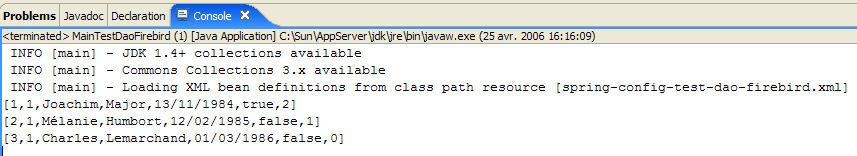
我们已成功获取人员列表。现在可以进行 JUnit 测试了。
JUnit 测试 [TestDaoFirebird] 如下所示：
- 测试 [test1] 至 [test5] 与第 1 版相同，但 [test4] 略有改动。测试 [test6] 是新增的。我们将仅对这两个测试进行说明。
[test4]
[test4]旨在测试[updatePersonne - DaoImplCommon]方法。该方法的代码如下：
- 第 4-5 行：我们等待 10 毫秒。这会迫使执行 [updatePerson] 的线程失去 CPU 控制权，从而可能增加我们观察到并发线程之间发生访问冲突的几率。
[test4] 启动 N=100 个线程，任务是同时将同一个人子女的数量增加 1。我们希望观察版本冲突和访问冲突是如何处理的。
线程在第 8–13 行创建。每个线程都会将第 3–5 行创建的人员的子女数量增加 1。[ThreadDaoMajEnfants] 的更新线程如下：
人员更新可能会失败，原因可能是我们要修改的人员不存在，或者该人员已被另一个线程更新过。这两种情况在第 67–69 行中进行了处理。无论哪种情况，[updatePersonne] 方法都会抛出代码为 2 的 [DaoException]。随后，该线程将被迫从头开始重启更新过程（while 循环，第 34 行）。
[test6]
[test6] 旨在测试 [insertPersonne - DaoImplCommon] 方法。该方法的代码如下：
- 第 6-7 行：我们等待 10 毫秒，以迫使执行 [insertPerson] 的线程失去 CPU 控制权，从而增加观察到因多个线程同时执行插入操作而引发冲突的可能性。
[test6] 的代码如下：
我们创建 100 个线程，它们将同时插入 100 个不同的人。这 100 个线程都会为需要插入的人获取一个主键，然后暂停 10 毫秒（第 10 行 – insertPerson），之后才能执行插入操作。我们希望验证一切是否顺利，特别是它们确实获得了不同的主键值。
- 第 7–11 行：创建了一个包含 100 个人的数组。这些人都是第 4–5 行创建的 person p 的副本。
- 第 14–17 行：启动 100 个插入线程。每个线程负责插入之前创建的 100 个人员中的一个。
- 第 19–23 行：[test6] 等待其启动的 100 个线程全部完成。当检测到第 i 个线程完成时，它会删除该线程刚刚插入的人员。
插入线程 [ThreadDaoInsertPersonne] 如下所示：
- 第 19–22 行：线程构造函数存储待插入的人员以及用于插入操作的 [DAO] 层。
- 第30行：插入该人员。若发生异常，则将其传播至[test6]。
测试
在测试过程中，我们获得了以下结果：
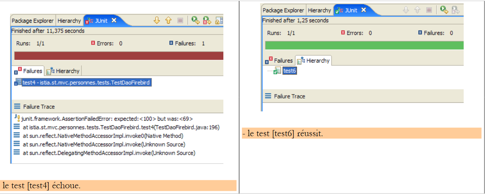 |
因此，[test4] 测试失败了。子节点数量已降至 69 个，而非预期的 100 个。发生了什么？让我们查看屏幕日志。日志显示 Firebird 抛出了异常：
Exception in thread "Thread-62" org.springframework.jdbc.UncategorizedSQLException: SqlMapClient operation; uncategorized SQLException for SQL []; SQL state [HY000]; error code [335544336];
--- The error occurred in personnes-firebird.xml.
--- The error occurred while applying a parameter map.
--- Check the Personne.updateOne-InlineParameterMap.
--- Check the statement (update failed).
--- Cause: org.firebirdsql.jdbc.FBSQLException: GDS Exception. 335544336. deadlock
update conflicts with concurrent update; nested exception is com.ibatis.common.jdbc.exception.NestedSQLException:
--- The error occurred in personnes-firebird.xml.
--- The error occurred while applying a parameter map.
- 第 1 行 – 发生了一个 Spring 异常 [org.springframework.jdbc.UncategorizedSQLException]。这是一个未捕获的异常，用于包装 Firebird JDBC 驱动程序抛出的异常，具体描述见第 6 行。
- 第 6 行 – Firebird JDBC 驱动程序抛出了类型为 [org.firebirdsql.jdbc.FBSQLException] 的异常，错误代码为 335544336。
- 第 7 行：表明有两个线程试图同时更新 [PERSONNES] 表中的同一行，导致并发冲突。
这并非致命错误。捕获此异常的线程可以重试更新操作。为此，请修改 [ThreadDaoMajEnfants] 中的代码：
- 第 8 行：我们处理类型为 [DaoException] 的异常。根据前文所述，我们应处理测试中出现的异常，即类型为 [org.springframework.jdbc.UncategorizedSQLException] 的异常。然而，我们无法直接处理该类型，因为它是一个通用的 Spring 类型，旨在封装 Spring 无法识别的异常。 Spring 能够识别由 Oracle、MySQL、Postgres、DB2、SQL Server 等多种数据库管理系统（DBMS）的 JDBC 驱动程序抛出的异常，但不包括 Firebird。因此，Firebird JDBC 驱动程序抛出的任何异常都会被封装在 Spring 类型 [org.springframework.jdbc.UncategorizedSQLException] 中：

如上所示，[UncategorizedSQLException] 类继承自第 17.3.3 节中提到的 [DataAccessException] 类。您可以通过其 [getSQLException] 方法来确定 [UncategorizedSQLException] 中封装了哪种异常：

此 [SQLException] 是由 [iBATIS] 层抛出的，该层本身封装了数据库 JDBC 驱动程序抛出的异常。可通过以下方法获取 [SQLException] 的确切原因：

我们获取了由 JDBC 驱动程序抛出的 [Throwable] 类型的对象：

[Throwable] 类型是 [Exception] 的父类。
在此，我们需要验证由 Firebird JDBC 驱动程序抛出的 [Throwable] 对象（该对象导致 [iBATIS] 层抛出 [SQLException]）是否确实是类型为 [org.firebirdsql.gds.GDSException] 且错误代码为 335544336 的异常。 要获取错误代码，我们可以使用 [org.firebirdsql.gds.GDSException] 类的 [getErrorCode()] 方法。
如果我们在 [ThreadDaoMajEnfants] 代码中使用 [org.firebirdsql.gds.GDSException] 异常，那么该线程将仅适用于 Firebird DBMS。使用该线程的 [test4] 测试也将受到同样的限制。 我们需要避免这种情况。事实上，我们希望 JUnit 测试无论使用何种 DBMS 都能保持有效。为实现这一目标，我们决定：每当检测到“更新冲突”异常时，[dao] 层将抛出代码为 4 的 [DaoException]，且不依赖底层 DBMS。因此，[ThreadDaoMajEnfants] 线程可重写如下：
- 第 34-36 行：捕获了代码为 4 的 [DaoException] 异常。[ThreadDaoMajEnfants] 线程将被迫从头开始重启更新过程（第 10 行）
因此，我们的 [dao] 层必须能够识别“更新冲突”异常。该异常由 JDBC 驱动程序抛出，且仅适用于该驱动程序。必须在 [DaoImplCommon] 类的 [updatePerson] 方法中处理此异常：
第 7–11 行必须包含在 try/catch 代码块中。对于 Firebird 数据库管理系统，我们需要验证导致更新失败的异常类型为 [org.firebirdsql.gds.GDSException]，且错误代码为 335544336。 如果将此类测试放入 [DaoImplCommon] 中，将导致该类与 Firebird DBMS 绑定，这显然是不希望看到的。若要保持 [DaoImplCommon] 类的通用性，我们需要继承该类，并在一个 Firebird 专用的类中处理异常。这就是我们当前正在做的事情。
17.4.2. [DaoImplFirebird] 类
其代码如下：
- 第 5 行：[DaoImplFirebird] 类继承自 [DaoImplCommon]，即我们刚刚研究的类。它在第 8–33 行中重新定义了导致我们问题的 [updatePersonne] 方法。
- 第 20 行：我们捕获了类型为 [UncategorizedSQLException] 的 Spring 异常
- 第 21–22 行：我们验证由 [iBATIS] 层抛出的底层 [SQLException] 异常是由 [org.firebirdsql.jdbc.FBSQLException] 类型的异常引起的
- 第 25 行：我们还验证了该 Firebird 异常的错误代码为 335544336，即“死锁”错误代码。
- 第 26–27 行：如果满足所有这些条件，则抛出代码为 4 的 [DaoException]。
- 第 36-44 行：[wait] 方法将当前线程暂停 N 毫秒。这仅在测试时有用。
我们已准备好测试新的 [dao] 层。
17.4.3. 测试 [DaoImplFirebird] 实现
测试配置文件 [spring-config-test-dao-firebird.xml] 已修改为使用 [DaoImplFirebird] 实现：
<?xml version="1.0" encoding="ISO_8859-1"?>
<!DOCTYPE beans SYSTEM "http://www.springframework.org/dtd/spring-beans.dtd">
<beans>
<!-- data source DBCP -->
<bean id="dataSource" class="org.apache.commons.dbcp.BasicDataSource"
destroy-method="close">
<property name="driverClassName">
<value>org.firebirdsql.jdbc.FBDriver</value>
</property>
<!-- warning: do not leave spaces between the two <value> tags -->
<property name="url">
<value>jdbc:firebirdsql:localhost/3050:C:/data/2005-2006/eclipse/dvp-eclipse-tomcat/mvc-personnes-03/database/dbpersonnes.gdb</value>
</property>
<property name="username">
<value>sysdba</value>
</property>
<property name="password">
<value>masterkey</value>
</property>
</bean>
<!-- SqlMapCllient -->
<bean id="sqlMapClient"
class="org.springframework.orm.ibatis.SqlMapClientFactoryBean">
<property name="dataSource">
<ref local="dataSource"/>
</property>
<property name="configLocation">
<value>classpath:sql-map-config-firebird.xml</value>
</property>
</bean>
<!-- the [dao] layer access classes -->
<bean id="dao" class="istia.st.mvc.personnes.dao.DaoImplFirebird">
<property name="sqlMapClient">
<ref local="sqlMapClient"/>
</property>
</bean>
</beans>
- 第 32 行：[dao] 层的新实现 [DaoImplFirebird]。
此前曾失败的 [test4] 测试结果如下：

[test4] 通过。屏幕日志的最后几行如下：
最后一行表明线程 #36 是最后一个完成的。第 3 行显示了一个版本冲突，导致线程 #36 被迫重启其人员更新过程（第 4 行）。其他日志显示了更新过程中的访问冲突：
第 2 行显示线程 #75 在更新过程中因更新冲突而失败：当对 [PERSONNES] 表发出 SQL [update] 命令时，需要更新的行已被另一个线程锁定。这种访问冲突将迫使线程 #75 重试其更新操作。
关于 [test4]，我们注意到其结果与版本 1 中相同测试的结果存在显著差异——在版本 1 中，该测试因同步问题而失败。由于版本 1 中 [dao] 层的方法未进行同步，因此发生了访问冲突。而在这里，我们无需对 [dao] 层进行同步，只需处理 Firebird 报告的访问冲突即可。
现在让我们运行 [dao] 层的完整 JUnit 测试：

因此，我们的 [dao] 层似乎是有效的。若要高度确信其有效性，我们需要进行进一步的测试。尽管如此，我们仍将其视为可运行的。
17.5. [service]层
17.5.1. [service]层的组件
[service]层由以下类和接口组成：

- [IService] 是 [服务] 层提供的接口
- [ServiceImpl] 是该接口的实现
[IService] 接口如下：
- 该接口与版本 1 一样包含四个方法，但额外增加了两个方法：
- saveMany：允许您以原子方式同时保存多人。要么全部保存，要么一个都不保存。
- deleteMany：允许您以原子方式同时删除多人。要么全部删除，要么一个也不删除。
Web 应用程序不会使用这两个方法。我们添加它们是为了说明数据库事务的概念。这两个方法必须在事务内执行，才能实现所需的原子性。
实现此接口的 [ServiceImpl] 类如下所示：
- 方法 [getAll, getOne, insertOne, saveOne] 调用 [dao] 层中同名的方法。
- 第 42–47 行：[saveMany] 方法将作为参数传递的数组中的人员逐一保存。
- 第 50–55 行：[deleteMany] 方法依次删除 ID 作为数组参数传入的人员。
我们曾提到，[saveMany] 和 [deleteMany] 方法必须在事务内执行，以确保这些方法的“全有或全无”特性。我们可以看到，上面的代码完全忽略了事务这一概念。这仅会在 [service] 层的配置文件中体现。
17.5.2. [ 服务]层的配置
在上文第 11 行，我们可以看到 [ServiceImpl] 实现持有对 [dao] 层的引用。与版本 1 一样，当 [service - ServiceImpl] 层被实例化时，Spring 会对其进行初始化。用于启用 [service] 层实例化的配置文件如下：
<?xml version="1.0" encoding="ISO_8859-1"?>
<!DOCTYPE beans SYSTEM "http://www.springframework.org/dtd/spring-beans.dtd">
<beans>
<!-- data source DBCP -->
<bean id="dataSource" class="org.apache.commons.dbcp.BasicDataSource"
destroy-method="close">
<property name="driverClassName">
<value>org.firebirdsql.jdbc.FBDriver</value>
</property>
<property name="url">
<!-- warning: do not leave spaces between the two <value> tags -->
<value>jdbc:firebirdsql:localhost/3050:C:/data/2005-2006/eclipse/dvp-eclipse-tomcat/mvc-personnes-03/database/dbpersonnes.gdb</value>
</property>
<property name="username">
<value>sysdba</value>
</property>
<property name="password">
<value>masterkey</value>
</property>
</bean>
<!-- SqlMapCllient -->
<bean id="sqlMapClient"
class="org.springframework.orm.ibatis.SqlMapClientFactoryBean">
<property name="dataSource">
<ref local="dataSource"/>
</property>
<property name="configLocation">
<value>classpath:sql-map-config-firebird.xml</value>
</property>
</bean>
<!-- the [dao] layer access class -->
<bean id="dao" class="istia.st.mvc.personnes.dao.DaoImplFirebird">
<property name="sqlMapClient">
<ref local="sqlMapClient"/>
</property>
</bean>
<!-- transaction manager -->
<bean id="transactionManager"
class="org.springframework.jdbc.datasource.DataSourceTransactionManager">
<property name="dataSource">
<ref local="dataSource"/>
</property>
</bean>
<!-- access classes to the [service] layer -->
<bean id="service"
class="org.springframework.transaction.interceptor.TransactionProxyFactoryBean">
<property name="transactionManager">
<ref local="transactionManager"/>
</property>
<property name="target">
<bean class="istia.st.mvc.personnes.service.ServiceImpl">
<property name="dao">
<ref local="dao"/>
</property>
</bean>
</property>
<property name="transactionAttributes">
<props>
<prop key="get*">PROPAGATION_SUPPORTS,readOnly</prop>
<prop key="save*">PROPAGATION_REQUIRED</prop>
<prop key="delete*">PROPAGATION_REQUIRED</prop>
</props>
</property>
</bean>
</beans>
- 第 1–36 行：[dao] 层的配置。关于此配置的说明，请参见第 17.3.2 节中对 [dao] 层的讨论。
- 第 38–64 行：配置 [service] 层
在第 46 行，我们可以看到 [service] 层是由 [TransactionProxyFactoryBean] 类型实现的。我们原本期望看到 [ServiceImpl] 类型。[TransactionProxyFactoryBean] 是 Spring 的预定义类型。一个预定义类型如何能够实现专属于我们应用程序的 [IService] 接口呢？
让我们先来看看 [TransactionProxyFactoryBean] 类：

我们可以看到它实现了 [FactoryBean] 接口。我们之前已经遇到过这个接口。我们知道，当应用程序向 Spring 请求一个实现 [FactoryBean] 接口的类型的实例时，Spring 返回的并非该类型的 [I] 实例，而是 [I].getObject() 方法返回的对象：

在我们的案例中，[service] 层将由 [TransactionProxyFactoryBean].getObject() 返回的对象来实现。这个对象的本质是什么？我们不会深入探讨细节，因为它们比较复杂。这些内容属于所谓的 Spring AOP（面向切面编程）。我们将尝试通过一些简单的图表来阐明这些概念。AOP 支持以下功能：
- 我们有两个类 C1 和 C2，其中 C1 使用 C2 提供的 [I2] 接口：
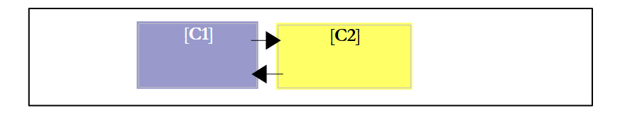 |
- 得益于面向切面编程（AOP），我们可以在类 C1 和 C2 之间插入一个拦截器，且对这两个类而言都是透明的：
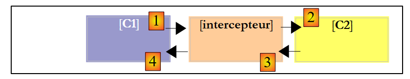 |
类 [C1] 已被编译为与 [C2] 所实现的接口 [I2] 协同工作。在运行时，AOP 将 [拦截器] 类置于 [C1] 和 [C2] 之间。要实现这一点，[拦截器] 类当然必须向 [C1] 展示与 [C2] 相同的 [I2] 接口。
这有什么用？Spring 文档提供了一些示例。例如，您可能希望记录对 [C2] 中特定方法 M 的调用，以便对该方法进行审计。在 [拦截器] 中，您需要编写一个方法 [M] 来执行这些日志记录。来自 [C1] 对 [C2].M 的调用将按以下方式进行（参见上图）：
- [C1] 调用 [C2] 的方法 M。实际上，被调用的将是 [interceptor] 的方法 M。只要 [C1] 调用的是接口 [I2] 而非 [I2] 的具体实现，这种情况就可能发生。唯一的要求是 [interceptor] 必须实现 [I2]。
- [拦截器] 的方法 M 记录相关信息，并调用 [C1] 最初目标 [C2] 的方法 M。
- [C2] 的 M 方法执行并将其结果返回给 [interceptor] 的 M 方法，后者可选择性地对步骤 2 中执行的内容进行补充。
- [interceptor] 的方法 M 将结果返回给 [C1] 的调用方法
我们可以看到，[拦截器] 的 M 方法可以在调用 [C2] 的 M 方法之前和之后执行某些操作。因此，从 [C1] 的角度来看，它丰富了 [C2] 的 M 方法。因此，我们可以将 AOP 技术视为一种丰富类所呈现的接口的方式。
这一概念如何应用于我们的 [service] 层？如果我们直接使用 [ServiceImpl] 实例来实现 [service] 层，我们的 Web 应用程序将具有以下架构：
 |
如果我们使用 [TransactionProxyFactoryBean] 实例来实现 [service] 层，我们将得到以下架构：
 |
可以说，[服务]层是通过两个对象实例化的：
- 上文中我们称之为[事务代理]的对象，它实际上是[TransactionProxyFactoryBean]的[getObject]方法返回的对象。该对象充当[服务]层与[Web]层之间的接口。按设计，它实现了[IService]接口。
- 一个 [ServiceImpl] 实例，它同样实现了 [IService] 接口。只有它知道如何与 [dao] 层进行交互，因此它是必不可少的。
假设[web]层调用了[IService]接口的[saveMany]方法。我们知道，从功能上讲，该方法执行的插入/更新操作必须在事务内完成。要么全部成功，要么全部不执行。 我们之前介绍了 [ServiceImpl] 类的 [saveMany] 方法，并指出它缺乏事务概念。而 [事务代理] 的 [saveMany] 方法将通过引入事务概念来增强 [ServiceImpl] 类的 [saveMany] 方法。让我们参照上图：
- [Web] 层调用 [IService] 接口的 [saveMany] 方法。
- [transactional proxy] 的 [saveMany] 方法被执行。它会启动一个事务。为此，它必须拥有足够的信息，特别是用于建立与 DBMS 连接的 [DataSource] 对象。随后，它调用 [ServiceImpl] 的 [saveMany] 方法。
- 该方法开始执行。它会反复调用 [dao] 层来执行插入或更新操作。此时执行的 SQL 语句都在步骤 2 中启动的事务范围内执行。
- 假设其中某项操作失败，[dao]层将把异常向上传播至[service]层，具体而言是[ServiceImpl]实例的[saveMany]方法。
- 该方法不执行任何操作，允许异常向上传播至 [transactional proxy] 的 [saveMany] 方法。
- 收到异常后，拥有该事务的 [transactional proxy] 的 [saveMany] 方法将执行 [rollback] 以撤销所有更新，然后允许异常向上传播至 [web] 层，由该层负责处理。
在步骤 4 中，我们假设插入或更新操作中有一项失败。如果并非如此，则在 [5] 中不会传播任何异常。情况 [6] 也是如此。在此情况下，[transactional proxy] 的 [saveMany] 方法会提交事务以验证所有更新。
现在，我们对 [TransactionProxyFactoryBean] 实现的架构有了更清晰的认识。让我们重新审视其配置：
<!-- transaction manager -->
<bean id="transactionManager"
class="org.springframework.jdbc.datasource.DataSourceTransactionManager">
<property name="dataSource">
<ref local="dataSource"/>
</property>
</bean>
<!-- access classes to the [service] layer -->
<bean id="service"
class="org.springframework.transaction.interceptor.TransactionProxyFactoryBean">
<property name="transactionManager">
<ref local="transactionManager"/>
</property>
<property name="target">
<bean class="istia.st.mvc.personnes.service.ServiceImpl">
<property name="dao">
<ref local="dao"/>
</property>
</bean>
</property>
<property name="transactionAttributes">
<props>
<prop key="get*">PROPAGATION_REQUIRED,readOnly</prop>
<prop key="save*">PROPAGATION_REQUIRED</prop>
<prop key="delete*">PROPAGATION_REQUIRED</prop>
</props>
</property>
</bean>
让我们结合已建立的架构来分析这一配置：
 |
- [事务代理] 将负责管理事务。Spring 提供了多种事务管理策略。[事务代理] 需要引用所选的事务管理器。
- 第 11–13 行：为 [TransactionProxyFactoryBean] bean 定义 [transactionManager] 属性，并引用一个事务管理器。该事务管理器在第 2–7 行中定义。
- 第 2–7 行：事务管理器的类型为 [DataSourceTransactionManager]：

[DataSourceTransactionManager] 是一种适用于通过 [DataSource] 对象访问数据库管理系统 (DBMS) 的事务管理器。它只能管理单个 DBMS 上的事务，无法管理跨多个 DBMS 分布的事务。在此场景中，我们仅有一个 DBMS，因此该事务管理器是合适的。 当 [transactional proxy] 启动事务时，它是在与该线程关联的连接上进行的。该连接将用于通向数据库的所有层：[ServiceImpl, DaoImplCommon, SqlMapClientTemplate, JDBC]。
[DataSourceTransactionManager] 类需要知道应从哪个数据源请求连接以将其附加到线程上。这在第 4–6 行中进行了定义：它与 [dao] 层所使用的数据源相同（参见第 17.5.2 节）。
- 第 14–19 行："target" 属性指定了要拦截的类，在本例中是 [ServiceImpl] 类。需要此信息有两个原因：
- [ServiceImpl] 类必须被实例化，因为它负责与 [dao] 层的通信
- [TransactionProxyFactoryBean] 必须生成一个代理，该代理向 [web] 层展示与 [ServiceImpl] 相同的接口。
- 第 21–27 行：指定代理必须拦截 [ServiceImpl] 的哪些方法。第 21 行的 [transactionAttributes] 属性指明了 [ServiceImpl] 的哪些方法需要事务，以及事务的属性是什么：
- 第 23 行：名称以 get 开头的方法 [getOne, getAll] 将在具有 [PROPAGATION_REQUIRED, readOnly] 属性的事务中执行：
- PROPAGATION_REQUIRED：如果线程已关联事务，则该方法在事务中运行；否则，将创建一个新事务，并在其中运行该方法。
- readOnly：只读事务
在此，[ServiceImpl] 的 [getOne] 和 [getAll] 方法将在事务中执行，尽管这实际上并非必要。每个操作仅包含一个 SELECT 语句。我们看不出将此 SELECT 语句置于事务中的意义。
- 第 24 行：名称以“save”开头的方法——[saveOne] 和 [saveMany]——在具有 [PROPAGATION_REQUIRED] 属性的事务中执行。
- 第 25 行：[ServiceImpl] 的 [deleteOne] 和 [deleteMany] 方法的配置与 [saveOne] 和 [saveMany] 方法完全相同。
在我们的 [service] 层中，仅需将 [saveMany] 和 [deleteMany] 方法置于事务中执行。配置可简化为以下几行：
<property name="transactionAttributes">
<props>
<prop key="saveMany">PROPAGATION_REQUIRED</prop>
<prop key="deleteMany">PROPAGATION_REQUIRED</prop>
</props>
</property>
17.6. 测试 [service] 层
现在我们已经编写并配置了 [service] 层，接下来将使用 JUnit 测试对其进行测试：

[服务]层的配置文件 [spring-config-test-service-firebird.xml] 即第17.5.2节中所述的文件。
JUnit 测试 [TestServiceFirebird] 如下所示：
1 2 3 4 5 6 7 8 9 10 11 12 13 14 15 16 17 18 19 20 21 22 23 24 25 26 27 28 29 30 31 32 33 34 35 36 37 38 39 40 41 42 43 44 45 46 47 48 49 50 51 52 53 54 55 56 57 58 59 60 61 62 63 64 65 66 67 68 69 70 71 72 73 74 75 76 77 78 79 80 81 82 83 84 85 86 87 88 89 90 91 92 93 94 95 96 97 98 99 100 101 102 103 104 105 106 107 108 109 110 111 112 113 114 115 116 117 118 119 120 121 122 123 124 125 126 127 128 129 130 131 132 133 134 135 136 137 138 139 140 141 142 143 144 145 146 147 148 149 150 151 152 153 154 155 156 157 | |
- 第 19–22 行：该程序测试由 [spring-config-test-service-firebird.xml] 文件配置的 [dao] 和 [service] 层，该文件已在上一节中讨论过。
- 测试方法 [test1] 至 [test6] 在概念上与 [dao] 层 [TestDaoFirebird] 测试类中同名的对应方法完全一致。唯一的区别在于，根据配置，[saveOne] 和 [deleteOne] 方法现在是在事务内执行的。
- [test7] 方法的目的是测试 [saveMany] 和 [deleteMany] 方法。我们需要验证它们确实是在事务中执行的。让我们对该方法的代码进行注释：
- 第 62–63 行：我们统计列表中当前的人数 [nbPersonnes1]
- 第 67–72 行：创建三个人
- 第 73–83 行：这三个人通过 [saveMany] 方法（第 77 行）被保存。前两个人 p1 和 p2 的 ID 均为 -1，将被添加到 [PERSONNES] 表中。 人员 p3 的 ID 为 -2。因此这不是插入操作，而是更新操作。由于 [PERSONS] 表中不存在 ID 为 -2 的人员，该更新将失败。因此 [dao] 层将抛出一个异常，该异常将向上传播至 [service] 层。第 83 行会检查该异常是否存在。
- 由于之前的异常，[service]层应回滚[saveMany]方法执行期间发出的所有SQL语句，因为该方法是在事务中运行的。第86–87行：我们验证列表中的人数没有变化，这意味着p1和p2的插入操作并未发生。
- 第 88–103 行：我们仅添加 p1 和 p2，并验证列表中现在增加了两个人。
- 第 106–114 行：我们删除一组人员，该组包含刚刚添加的 p1 和 p2，以及一个不存在的用户（id = -1）。为此使用了第 108 行的 [deleteMany] 方法。由于 [PERSONNES] 表中不存在 id 等于 –1 的用户，该方法将失败。 因此，[dao] 层将抛出一个异常，该异常将向上传播至 [service] 层。第 114 行检查了该异常是否存在。
- 由于之前抛出了异常，[service] 层应回滚 [deleteMany] 方法执行期间发出的所有 SQL 语句，因为该方法是在事务中运行的。第 116–117 行：我们验证列表中的人数没有变化，因此 p1 和 p2 并未被删除。
- 第 122 行：我们删除一个仅包含 p1 和 p2 的组。此操作应成功。该方法的其余部分将验证结果确实如此。
运行测试得到以下结果：

全部七个测试均成功通过。我们将认为我们的 [service] 层已可正常运行。
17.7. [w eb] 层
让我们回顾一下即将构建的 Web 应用程序的总体架构：
 |
我们刚刚构建了用于操作 Firebird 数据库的 [dao] 和 [service] 层。我们编写了该应用程序的 1.0 版本，其中 [dao] 和 [service] 层操作的是内存中的人员列表。 当时编写的 [web] 层仍然有效。事实上，它与实现 [IService] 接口的 [service] 层进行了交互。由于新的 [service] 层实现了相同的接口，因此 [web] 层无需修改。
在上一篇文章中，我们使用 Eclipse 项目 [mvc-personnes-02B] 对该应用程序的 1.0 版进行了测试，其中 [Web、Service、DAO、Entities] 各层被打包为 .jar 文件：
 |
[src] 文件夹为空。各层类的文件位于 [people-*.jar] 归档文件中：
 |
要测试版本 2，我们在 Eclipse 中将 [mvc-personnes-02B] 文件夹复制为 [mvc-personnes-03B]（复制/粘贴）：

在 [mvc-personnes-03] 项目中，我们通过 [文件 / 导出 / Jar 文件] 分别将 [DAO] 和 [service] 层导出到项目 [dist] 文件夹中的 [personnes-dao.jar] 和 [personnes-service.jar] 存档中：

我们将这两个文件复制出来，然后在 Eclipse 中将其粘贴到 [mvc-personnes-03B] 项目的 [WEB-INF/lib] 文件夹中，它们将替换该文件夹中上一版本的同名文件。
 |
我们还需将 [mvc-personnes-03] 项目 [lib] 文件夹中的压缩包 [commons-dbcp-*.jar, commons-pool-*.jar, firebirdsql-full.jar, ibatis-common-2.jar, ibatis-sqlmap-2.jar] 复制并粘贴到 [mvc-personnes-03B] 项目的 [WEB-INF/lib] 文件夹中。这些 JAR 文件是新 [dao] 和 [service] 层所必需的。
完成此操作后，我们将这些新的 JAR 文件添加到项目的类路径中：[右键单击项目 -> 属性 -> Java 构建路径 -> 添加 JAR 文件]。
[src] 文件夹包含 [dao] 和 [service] 层的配置文件：

[spring-config.xml] 文件用于配置 Web 应用程序的 [dao] 和 [service] 层。在新版本中，该文件与 [mvc-personnes-03] 项目中用于配置服务层测试的 [spring-config-test-service-firebird.xml] 文件完全相同。因此，我们将内容从一个文件复制并粘贴到另一个文件中：
<?xml version="1.0" encoding="ISO_8859-1"?>
<!DOCTYPE beans SYSTEM "http://www.springframework.org/dtd/spring-beans.dtd">
<beans>
<!-- data source DBCP -->
<bean id="dataSource" class="org.apache.commons.dbcp.BasicDataSource"
destroy-method="close">
<property name="driverClassName">
<value>org.firebirdsql.jdbc.FBDriver</value>
</property>
<property name="url">
<!-- warning: do not leave spaces between the two <value> tags -->
<value>jdbc:firebirdsql:localhost/3050:C:/data/2005-2006/eclipse/dvp-eclipse-tomcat/mvc-personnes-03/database/dbpersonnes.gdb</value>
</property>
<property name="username">
<value>sysdba</value>
</property>
<property name="password">
<value>masterkey</value>
</property>
</bean>
<!-- SqlMapCllient -->
<bean id="sqlMapClient"
class="org.springframework.orm.ibatis.SqlMapClientFactoryBean">
<property name="dataSource">
<ref local="dataSource"/>
</property>
<property name="configLocation">
<value>classpath:sql-map-config-firebird.xml</value>
</property>
</bean>
<!-- the [dao] layer access class -->
<bean id="dao" class="istia.st.mvc.personnes.dao.DaoImplFirebird">
<property name="sqlMapClient">
<ref local="sqlMapClient"/>
</property>
</bean>
<!-- transaction manager -->
<bean id="transactionManager"
class="org.springframework.jdbc.datasource.DataSourceTransactionManager">
<property name="dataSource">
<ref local="dataSource"/>
</property>
</bean>
<!-- access classes to the [service] layer -->
<bean id="service"
class="org.springframework.transaction.interceptor.TransactionProxyFactoryBean">
<property name="transactionManager">
<ref local="transactionManager"/>
</property>
<property name="target">
<bean class="istia.st.mvc.personnes.service.ServiceImpl">
<property name="dao">
<ref local="dao"/>
</property>
</bean>
</property>
<property name="transactionAttributes">
<props>
<prop key="get*">PROPAGATION_SUPPORTS,readOnly</prop>
<prop key="save*">PROPAGATION_REQUIRED</prop>
<prop key="delete*">PROPAGATION_REQUIRED</prop>
</props>
</property>
</bean>
</beans>
- 第 12 行：Firebird 数据库的 URL。我们继续使用之前用于测试 [dao] 和 [service] 层的数据库
我们将 [mvc-personnes-03B] Web 项目部署到 Tomcat 中：
 |  |
我们已准备好进行 的测试。Firebird 数据库管理系统正在运行。[PERSONNES] 表的内容如下：

随后启动 Tomcat。使用浏览器访问 URL [http://localhost:8080/mvc-personnes-03B]：

我们通过 [添加]链接添加一名新人员：
 | 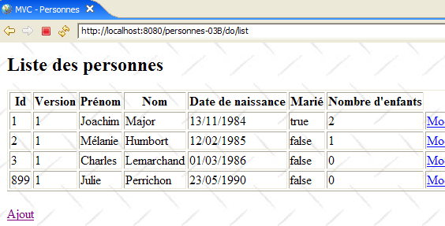 |
我们在数据库中验证新增记录：
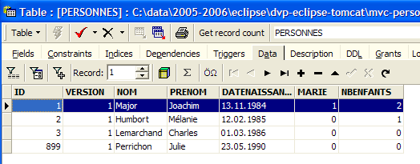
欢迎读者进行其他测试 [编辑、删除]。
现在让我们进行版本 1 中进行的版本冲突测试。[Firefox] 将作为用户 U1 的浏览器。用户 U1 请求 URL [http://localhost:8080/mvc-personnes-03B]：
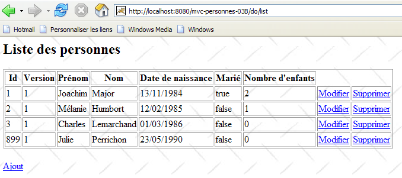
[IE] 将作为用户 U2 的浏览器。用户 U2 请求相同的 URL：

用户 U1 输入该人的详细信息 [Perrichon]：

用户 U2 也进行了同样的操作：

用户 U1 进行修改并提交：
 |
用户 U2 也进行了同样的操作：
 |
用户 U2 通过表单上的 [取消] 链接返回用户列表：

他们发现用户 [Perrichon] 已被 U1 修改过（姓名首字母大写）。
那么数据库的情况如何呢？让我们来看看：

根据U1的修改，第899号人员的姓名确实已大写。
17.8. 结论
让我们回顾一下我们的目标。我们有一个采用以下三层架构的Web应用程序：
其中 [dao] 和 [service] 层使用内存中的数据列表，该列表在 Web 服务器关闭时会丢失。这就是版本 1。在版本 2 中，[service] 和 [dao] 层被重写，使得人员列表存储在数据库表中。现在它具有持久性。 现在，我们计划研究更换数据库管理系统（DBMS）对应用程序的影响。为此，我们将构建三个新版本的Web应用程序：
 |
- 版本 3：数据库管理系统为 Postgres
- 版本 4：数据库管理系统为 MySQL
- 版本 5：数据库管理系统为 SQL Server Express 2005
以下位置进行了更改：
- [DaoImplFirebird] 类实现了与 Firebird 数据库管理系统相关的 [dao] 层功能。如果该需求仍然存在，它将分别被 [DaoImplPostgres]、[DaoImplMySQL] 和 [DaoImplSqlExpress] 类所取代。
- 针对 Firebird 数据库管理系统（DBMS）的 iBATIS 映射文件 [personnes-firebird.xml] 将分别被映射文件 [personnes-postgres.xml]、[personnes-mysql.xml] 和 [personnes-sqlexpress.xml] 所取代。
- [dao] 层中 [DataSource] 对象的配置是针对特定 DBMS 的。因此，它会随着每个版本而变化。
- DBMS 的 JDBC 驱动程序也会随着每个版本而变化
除上述内容外，其余部分保持不变。在接下来的章节中，我们将重点介绍这些新版本，仅聚焦于每个版本所引入的新功能。